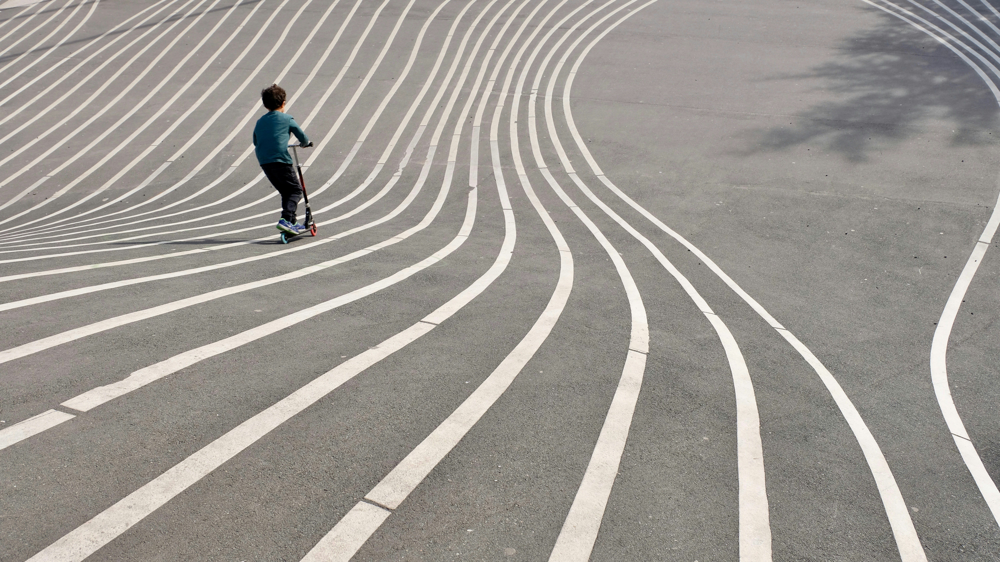
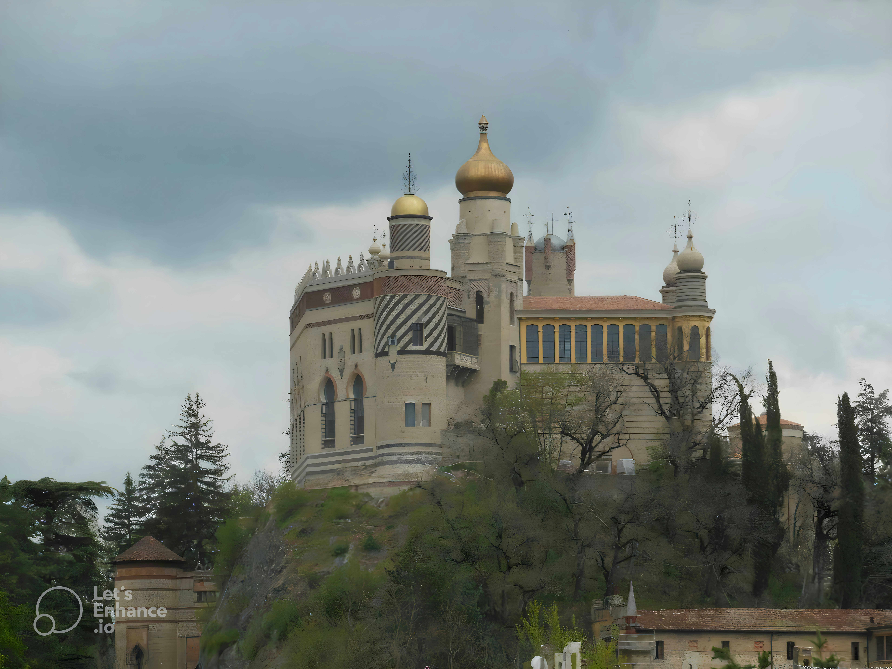

✦
✧
✦
灵感收藏 ✧
收藏一切美好的事物
配色灵感
柔和的自然色系
摄影灵感
海边的花

插画灵感
线条与情绪
文字灵感
"万物皆有裂痕，
那是光照进来的地方。"
那是光照进来的地方。"
温柔治愈的句子
文字灵感
"亲爱的朋友，
人生永远柳暗花明。"
人生永远柳暗花明。"
治愈系文字

设计灵感
温暖的房间

生活灵感
一杯咖啡的时光

Color Inspiration
莫兰迪色系
Color Palette
日常静物
collect
beautiful
moments ♡
beautiful
moments ♡
设计灵感
安静的工作台
摄影灵感
清晨的光

花开了